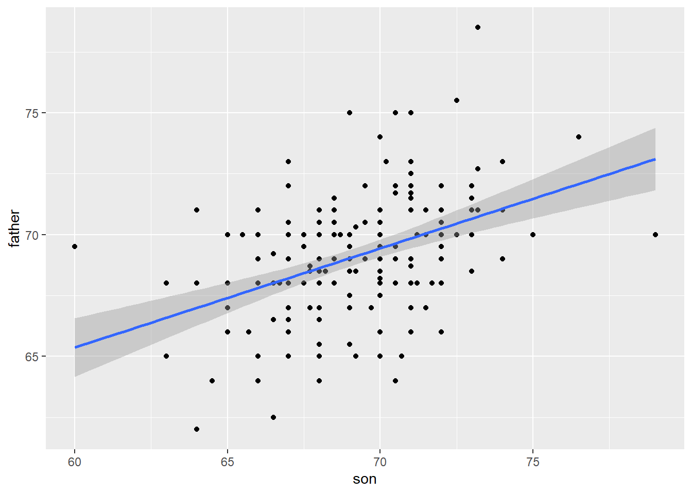
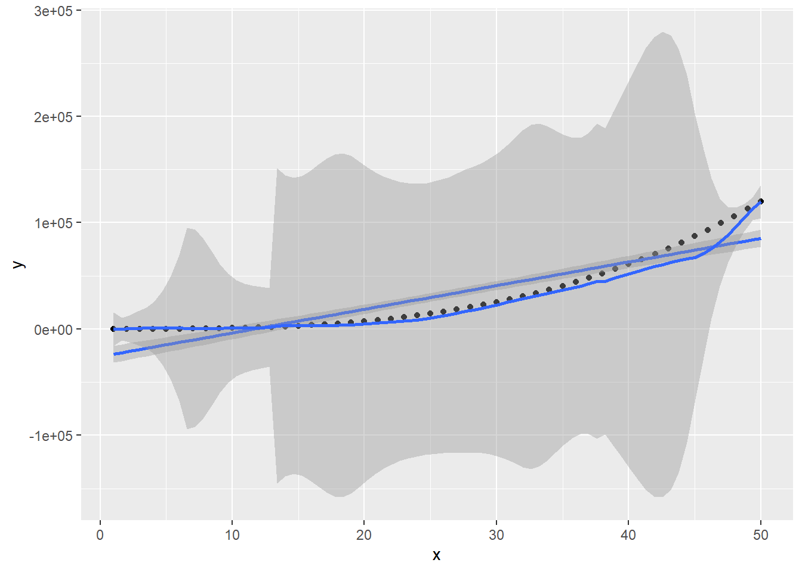

Linear regression stands as a fundamental concept in statistics and machine learning, serving as a cornerstone for predictive modeling. Its simplicity and effectiveness make it a widely used technique in various fields, from finance to healthcare and beyond. In this blog post, we’ll delve into the basics of linear regression, its applications, and how it works.
At its core, linear regression is a statistical method used to understand the relationship between two variables: an independent variable (predictor) and a dependent variable (outcome). The goal is to establish a linear relationship between these variables, enabling predictions and understanding the impact of changes in the predictor on the outcome.
Simple linear regression involves one independent variable, while multiple linear regression deals with several predictors. Both aim to fit a linear equation to the data that best explains the relationship between variables. The equation takes the form: \(Y = \beta_0 + \beta_1X_1 + \beta_2X_2 + ... + \epsilon\), where \(Y\) is the dependent variable, \(X\)s represent the predictors, \(\beta\)s are coefficients, and \(\epsilon\) is the error term.
To understand regression thoroughly we will use a data-driven approach that examines the height data from families to try to understand heredity.
If we were to specify a linear model for this data, we would denote the \(N\) observed father heights with \(x_1, x_2, ....x_n\), then we model the \(N\) son heights we are trying to predict with: \[Y_i = \beta_0 + \beta_1X_i + \epsilon_i, i = 1, 2, ....N.\] where \(Y_i\) is the random son’s height that we want to predict.
One reason why linear models are popular is their interpretability. Regarding the above data, we can explain the data as follows: due to inherited genes, a son’s predicted height increases by \(\beta_1\) for each additional inch in the father’s height, denoted by \(x\). However, not all sons with fathers of the same height \(x\) have identical heights. This disparity is accounted for by the term \(\epsilon\), which represents the remaining variability. This variability encompasses factors like the mother’s genetic influence, environmental aspects, and other biological random variations.
The way we formulated the model indicates that the intercept \(\beta_0\) lacks interpretability because it represents the predicted height of a son with a father having zero height, which is not practically meaningful in this context.
In order for linear models to be effective, it’s necessary to estimate the unknown values of \(\beta\). The conventional scientific approach involves determining the values that minimize the difference between the model and the actual data. This process is known as the least squares (LS) equation, a concept that will be frequently encountered in this chapter. For our data, the equation can be represented as:
\[RSS = \sum_{i=1}^{n} (y_i - (β_0 + β_1x_1))^2\]
This calculation represents the residual sum of squares (RSS). Once we identify the values that minimize the RSS, these values are referred to as the least squares estimates (LSE).
Within the R programming language, the least squares estimates can be acquired by utilizing the lm function.
On visualizing the heights of the fathers and their sons as well as the best linear fitting model, we can say that linear regressor has worked fine.
galton_heights |>ggplot(aes(son, father)) +geom_point() +geom_smooth(method ="lm", formula = y ~ x)

Non - Linear Regression
Traditional linear regression assumes a linear relationship between the independent and dependent variables, following a straight line or plane. However, real-world phenomena often exhibit more complex and curvilinear patterns. Non-linear regression, unlike its linear counterpart, allows for fitting models to non-linear data by employing curved lines, surfaces, or more intricate functions.
Understanding when to opt for non-linear regression is pivotal. Many natural processes, such as biological, economic, or physical systems, display patterns that cannot be adequately represented by linear models. For instance, growth patterns, saturation effects, or exponential decay are common scenarios where non-linear regression becomes indispensable.
Non-linear regression encompasses a wide spectrum of models. These include polynomial, exponential, logarithmic, power-law, sigmoidal, and many other complex functions. Each model is tailored to suit specific data behaviors, aiming to accurately capture and predict relationships that linear models cannot effectively represent.
For example, let’s create a custom data where \[x = 1, 2, ....50\] and \[ y = x^3 - 2x^2 + x + 2 + \epsilon\] where \(\epsilon\) denotes random noise.
x <-1:50y <- x^3-2* x^2+ x +2+rnorm(10, 0, 10)df <-data.frame(x, y)df
On fitting both polynomial (degree = 3) and linear models we can see that the former performs much better.
fit <-lm(y ~ x, data = df)df |>ggplot(aes(x, y)) +geom_point() +geom_smooth(method ="lm", formula = y ~ x) +geom_smooth(method ='loess', formula = y~poly(x, 3))

Conclusion
In summary, linear regression excels in capturing straightforward relationships between variables, offering simplicity and interpretability. Meanwhile, non-linear regression shines when dealing with more complex, non-linear data patterns that linear models cannot effectively represent.
The selection between linear and non-linear regression hinges on the nature of the data and the complexity of the relationship between variables. While linear regression provides a clear interpretation of linear trends, non-linear regression accommodates more nuanced, intricate relationships.
Both techniques possess their unique strengths and limitations. Linear regression is straightforward and computationally less demanding, whereas non-linear regression offers flexibility at the cost of potentially higher computational resources and the need to guard against overfitting.
A comprehensive understanding of both linear and non-linear regression equips analysts and researchers with a versatile toolkit to effectively model relationships within diverse datasets. This proficiency aids in making accurate predictions and informed decisions across various domains, optimizing analyses for specific data complexities and objectives.